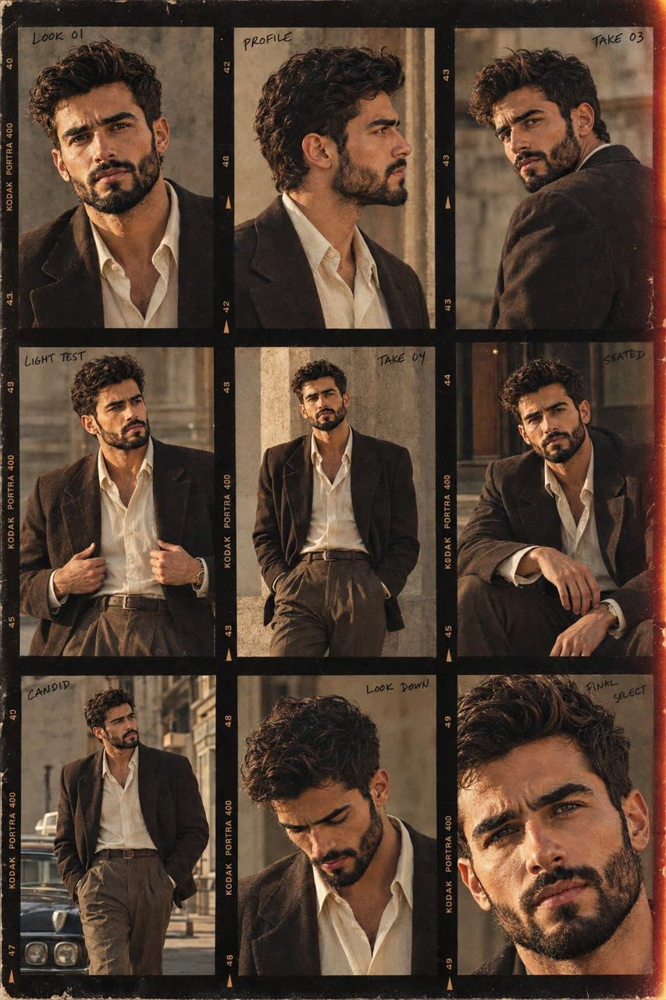

Vintage fashion contact sheet (9 frames)
GRN-009Grain / FilterGPT Image 2by HeisenLegacy (@MohdAdnanA86218)2026-09-22

Ultra-real vintage fashion contact sheet — nine poses of the same young man in a 3×3 film grid.
Prompt
Ultra-realistic vintage fashion photography contact sheet featuring 9 different photographs of the same strikingly handsome young man in his early 20s, arranged in a clean 3×3 film contact-sheet grid. He has thick naturally wavy jet-black hair, strong eyebrows, deep dark-brown eyes, a defined sculpted jawline, subtle natural stubble, realistic skin texture, visible pores, and refined facial features. Each frame shows a different natural fashion pose and expression — direct camera gaze, side profile, looking over shoulder, adjusting his jacket, hands in pockets, seated pose, walking candidly, looking downward, and close-up portrait. Maintain perfect facial identity consistency across every frame. He wears sophisticated vintage 1970s-inspired fashion: tailored dark blazer, cream shirt, high-waisted trousers, leather belt, subtle vintage accessories. Analog 35mm film aesthetic, warm muted tones, soft grain, slight film imperfections, natural shadows, authentic editorial photography. Each photograph is surrounded by thin black film-frame borders, subtle frame numbers, exposure markings, and small handwritten-style photographer notes such as “LOOK 01,” “PROFILE,” “LIGHT TEST,” “TAKE 04,” and “FINAL SELECT”. Handwritten annotations should look naturally written with a fine black pen. Contact-sheet layout photographed/scanned as a real vintage fashion archive sheet, slightly imperfect alignment, subtle paper texture, tiny dust particles, realistic film grain, gentle light leaks, high-end editorial styling, nostalgic 1970s fashion magazine atmosphere, Kodak Portra-style analog color rendering, photorealistic, 8K detail, cinematic composition, authentic photographic imperfections. No women, no duplicate poses, no distorted faces, no inconsistent identity, no modern digital-camera look, no excessive text, no watermark, no AI-looking skin.
Tags: contact sheet, vintage film, editorial